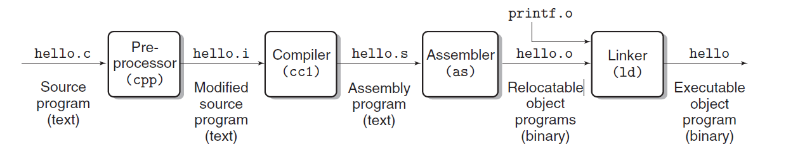
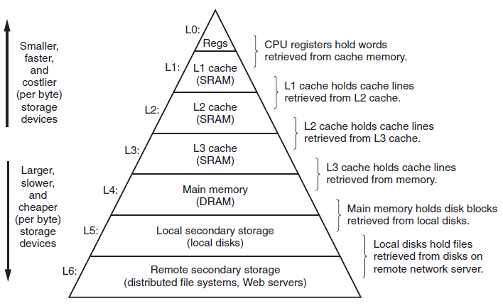

Chapter1 A Tour of Computer System
1.1 Infomation Is Bits + Context
Everything is a number. Source program is stored in a file as sequence of bytes and each text line is terminated by the invisible newline character ‘\n’, which is represented by the integer value 10.
Files that consist exclusively of ASCII characters are known as text files. All other files are known as binary files.
1.2 Programs Are Translated by Other Programs into Different Forms
Translation from source file to executable object file on a Unix system(compiler driver):

-
Preprocessing phase (preprocessor(cpp)): 注入‘#’开头的头文件，处理结果仍为c文件。
-
Compilation phase (compiler(cc1)): 把hello.i转变成汇编语言程序hello.s,
-
Assembly phase (assembler(al)): 把汇编语言程序hello.s翻译成机器语言指令hello.o。
-
Linking phase (linker(ld)): 把机器语言指令文件hello.o和用到的c语言标准库中的预先编译好的目标文件比如：printf.o合并到一起，并输出最终的可执行文件hello。
1.3 It pays to Understand How Compilation Systems Work
为什么我们需要理解compilation systems的工作原理：
- Optimizing program performance
- Understanding link-time errors
- Avoiding security holes
1.4 Processors Read and Interpret Instructions Stored in Memory
Shell： a command-line interpreter that prints a prompt，waits for you to type a command line，and then performs the command。

1.4.1 Hardware Organization of a system
-
Buses:
电子导线，用来在不同的部分之间传输字节流信息。 -
I/O Devices
输入/输出设备是系统与外界的连接。可执行程序最开始是存放在磁盘上的。
I/O设备都是通过controller或者adapter连接。两者区别主要在于packaging的方式，controller是设备本身或者主板上的芯片组，而适配器是主板上插入插槽的卡。 -
Main Memory
主内存是一个临时的存储设备，保存程序运行期间需要操作的程序和数据。物理上，主内存由dynamic random access memory (DRAM) 组成。逻辑上，内存由linear array of bytes组成，每一个字节都有从零开始的独一二的地址。 -
Processor
The central processing unit (CPU) 是用来编译机器命令的引擎。 他的核心是一个字长大小的寄存器叫做program counter (PC)。 在任何一个时候，PC都会指向一条机器指令(包含其内存)。 机器指令往往只有几条简单的操作并不断循环，比如register file和arithmetic/logic unit。
1.5 Caches Matter
L1和L2 caches 是用static random access memory (SRAM) 来实现。
1.6 Storage Devices Form a Hierarchy

1.7 The Operating System Manages the Hardware
Files are abstractions for I/O devices，virtual memory is an abstraction for both the main memory and disk I/O devices and processes are abstractions for the processor，main memory，and I/O devices.
1.7.1 Processes
进程是操作系统对于运行程序的抽象。
Posix是IEEE支持的Unix的标准化协议，为了让不同版本的Unix可以兼容。
操作系统的kernel用来进行不同进程之间的切换(kernel是用来管理所有进程的代码和数据结构的几何)。
1.7.3 Virtual Memory
让每一个进程都认为自己独占主内存空间。
Linux的内存空间分布(从下往上)：
- Program code and data：由可执行文件的内容直接初始化(大小固定)
- Heap：动态分配
- Shared libraries：比如c语言标准库和math库
- Stack：实现function call的地方(动态分配)
- Kernel virual memory：保留给内核，application不能读写这个区域的内容，或者调用内核的代码
1.7.4 Files
文件就是字节串。文件的读写用的是Unix I/O。
1.9 Important Themes
1.9.1 Amdahl’s Law：
一个系统执行一些程序所需要的时间本来是，假设系统只有一部分需要这么多时间，然后我们把它的性能提升了k倍，现在总得运行时间是：
所以，性能提升为：
1.9.2 Concurrency and Parallelism
-
Thread-Level Concurrency
Multiprocessors：Multi-cor(每个核有自己的L1和L2缓存)/Hyper-threaded(单核的CPU可以运行多个线程的程序) -
Instruction-level Parallelism
指令的执行可以被分成一系列的stages，这些stages可以并行操作（pipelining） -
Single-Instruction，Multiple-Data(SIMD)Parallelism
一条指令同时操作多组数据